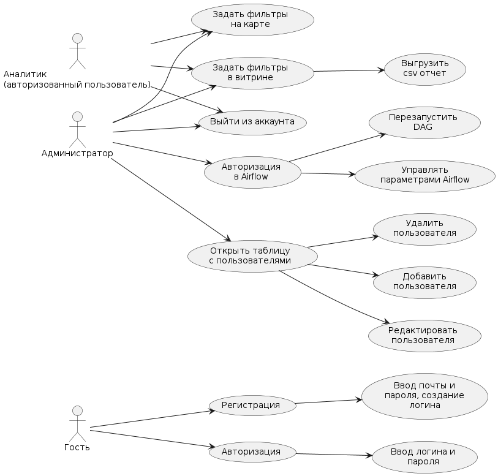

покрыт тестами
покрыт частично (причина в описании)
вне границ системы
пунктир по точкам — шаг внутри варианта (открывает тот же вариант)
Нет на диаграмме, но есть в приложении и в тестах
Выберите вариант использования на диаграмме слева.